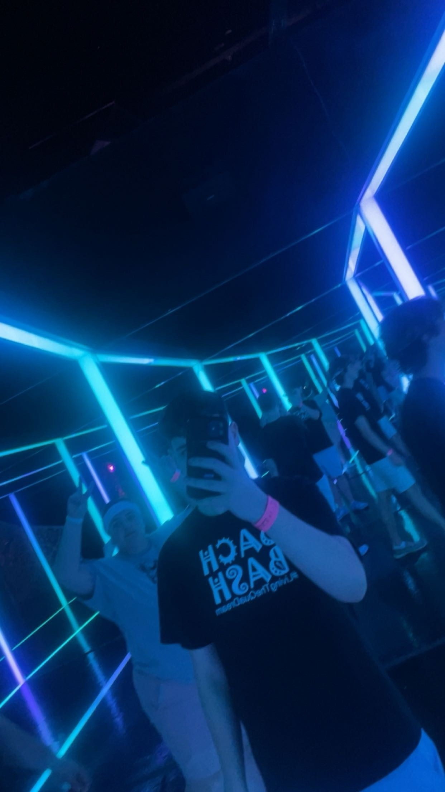

Work Experience
Starting off with my Work Experience, my first job was as a Cashier at Wegmans.
Wegmans
Wegmans 2019-2022: As a cashier i learned many skills including cash handling, incredible customer service, use of POS systems, I worked as Knowledge based server (KBS) aswell where I learned food handling and food saftey rules.
Click on the Wegmans logo to look at the Wegmans careers website and learn more info.
Best Buy: Geek Squad
Geek Squad 2022-Current: I currently work for Best Buy in Geek Squad as a consultation agent, ive learned many skills through Geeksquad, mainly technological skills including Hardware Troubleshooting, Software Knowledge and Mobile Devices.
Click on the Best buy and Geek Squad logo to learn more info.
Education
Here is a list of the schools i went to.
My Hobbies
One my main Hobbies is Gaming, I grew up playing video games on a family computer and now I currenlty play on one I built myself.

This is the PC I built.
I enjoy travelling alot, I dont get to do it often but when I do its always a grand time.
This picutre was taken inside "Other World" its in Colombus Ohio
My next planned trip is for Las Vegas Nevada!
© 2024 Schuschu's Site